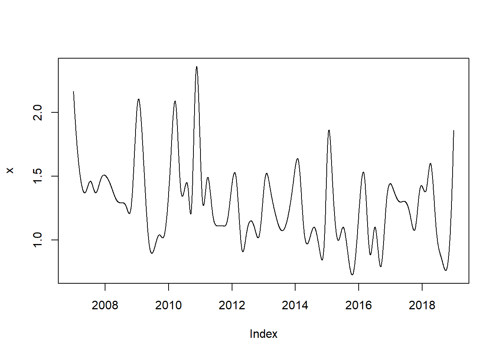
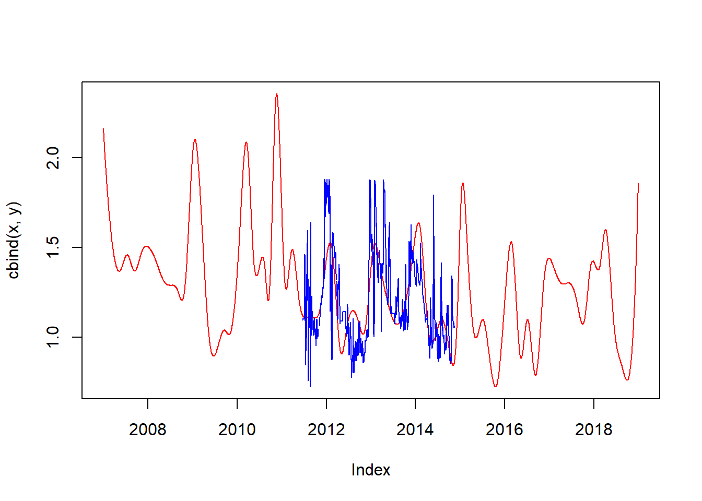
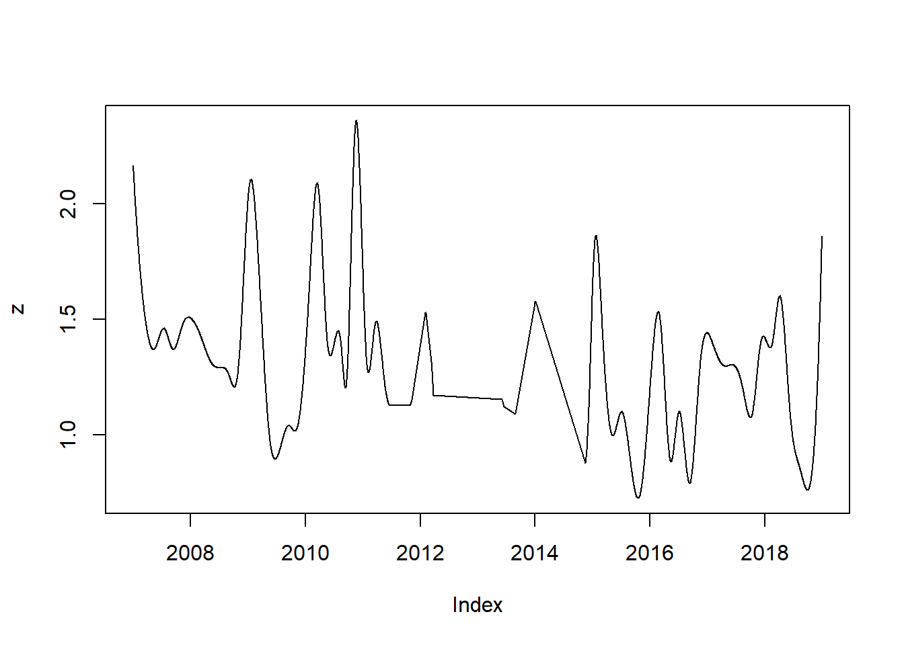
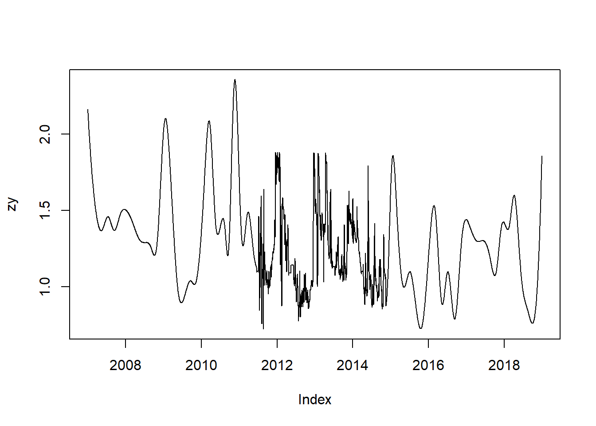

Last updated: 2020-04-03
Checks: 7 0
Knit directory: mhm_5.5_R_2019/
This reproducible R Markdown analysis was created with workflowr (version 1.6.1). The Checks tab describes the reproducibility checks that were applied when the results were created. The Past versions tab lists the development history.
Great! Since the R Markdown file has been committed to the Git repository, you know the exact version of the code that produced these results.
Great job! The global environment was empty. Objects defined in the global environment can affect the analysis in your R Markdown file in unknown ways. For reproduciblity it’s best to always run the code in an empty environment.
The command set.seed(20200317) was run prior to running the code in the R Markdown file. Setting a seed ensures that any results that rely on randomness, e.g. subsampling or permutations, are reproducible.
Great job! Recording the operating system, R version, and package versions is critical for reproducibility.
Nice! There were no cached chunks for this analysis, so you can be confident that you successfully produced the results during this run.
Great job! Using relative paths to the files within your workflowr project makes it easier to run your code on other machines.
Great! You are using Git for version control. Tracking code development and connecting the code version to the results is critical for reproducibility.
The results in this page were generated with repository version ea6d280. See the Past versions tab to see a history of the changes made to the R Markdown and HTML files.
Note that you need to be careful to ensure that all relevant files for the analysis have been committed to Git prior to generating the results (you can use wflow_publish or wflow_git_commit). workflowr only checks the R Markdown file, but you know if there are other scripts or data files that it depends on. Below is the status of the Git repository when the results were generated:
Ignored files:
Ignored: .Rhistory
Ignored: .Rproj.user/
Ignored: analysis/thale_lhw_hf.nb.html
Untracked files:
Untracked: Hydro_wq_579610.jpeg
Untracked: USGS_statistic.pdf
Untracked: analysis/EDA.Rmd
Untracked: analysis/Rain_runoff_paper_plot.R
Untracked: analysis/cali_vali_results.R
Untracked: analysis/lhw_pdf.R
Untracked: analysis/perfermance_table.Rmd
Untracked: analysis/pointsource_2019.R
Untracked: analysis/raster_trend_analysis.R
Untracked: analysis/selke_w.Rmd
Untracked: analysis/spatial_anlysis.R
Untracked: analysis/station_timeseries_trend.R
Untracked: analysis/thale_hf.R
Untracked: data/ConfigFile_cali2018.log
Untracked: data/ConfigFile_vali2018.log
Untracked: data/Load_mon_baseline_tickoff_thale.rds
Untracked: data/Pre_cali_stations_2004_2018.csv
Untracked: data/Q_2004_2018.csv
Untracked: data/Rapbode_smoothdata.csv
Untracked: data/Rappbode-_TOR_-_YBT_Thale_-YBT_Thale-433.csv
Untracked: data/Temp_cali_stations_2004_2018.csv
Untracked: data/WQM_Fluxes_States_cali2018.nc
Untracked: data/WQM_Fluxes_States_vali2018.nc
Untracked: data/conc_vali_cali.csv
Untracked: data/daily_concentration_cali.out
Untracked: data/daily_concentration_cali2018.out
Untracked: data/daily_concentration_vali2018.out
Untracked: data/daily_discharge_cali.out
Untracked: data/daily_discharge_cali2018.out
Untracked: data/daily_discharge_vali2018.out
Untracked: data/discharge_cali.nc
Untracked: data/discharge_cali2018.nc
Untracked: data/discharge_vali2018.nc
Untracked: data/fort.123
Untracked: data/fort_cali.123
Untracked: data/i, nLink_riverbox(i), nLink_criverbox(i,1), nNode_interload(iNode,1),nNode_LoadqTIN(iNode,1),temp_qTIN(iNode), width, nLink_length(i).txt
Untracked: data/i, nLink_riverbox(i), nLink_criverboxi, nNode_interload(iNode,nNode_LoadqTIN(iNode,temp_qTIN(iNode), width, nLink_length(i).txt
Untracked: data/i,nLink_riverbox(i),nNode_VTR(iNode), nLink_criverbox(i,1),aquatic_denitri(i),aquatic_assimil(i).txt
Untracked: data/i,nLink_riverbox(i),nNode_VTR(iNode), nLink_criverboxi,,aquatic_denitri(i),aquatic_assimil(i).txt
Untracked: data/kk,cellCoor11(kk,1),cellCoor11(kk,2),Id11(ic,jc),fDir11(ic, jc).txt
Untracked: data/mHM_Fluxes_States_cali2018.nc
Untracked: data/pet_cali_stations_2004_2018.csv
Untracked: data/rivernetwork.xlsx
Untracked: data/thale_daily_df.csv
Untracked: data/thale_upstream.xls
Untracked: data/width_cali.txt
Untracked: wq_579020_2007_2018.txt
Untracked: wq_579020_2007_2019.txt
Note that any generated files, e.g. HTML, png, CSS, etc., are not included in this status report because it is ok for generated content to have uncommitted changes.
These are the previous versions of the repository in which changes were made to the R Markdown (analysis/thale_lhw_hf.Rmd) and HTML (docs/thale_lhw_hf.html) files. If you’ve configured a remote Git repository (see ?wflow_git_remote), click on the hyperlinks in the table below to view the files as they were in that past version.
| File | Version | Author | Date | Message |
|---|---|---|---|---|
| Rmd | ea6d280 | zhouxi | 2020-04-03 | Publish the analysis files for myproject mhm_5.5_R_2019 |
This is an R Markdown Notebook. When you execute code within the notebook, the results appear beneath the code.
Try executing this chunk by clicking the Run button within the chunk or by placing your cursor inside it and pressing Ctrl+Shift+Enter.
library(tidyverse)-- Attaching packages --------------------------------------------------- tidyverse 1.3.0 --v ggplot2 3.3.0 v purrr 0.3.3
v tibble 2.1.3 v dplyr 0.8.5
v tidyr 1.0.2 v stringr 1.4.0
v readr 1.3.1 v forcats 0.5.0-- Conflicts ------------------------------------------------------ tidyverse_conflicts() --
x dplyr::filter() masks stats::filter()
x dplyr::lag() masks stats::lag()library(lubridate)
Attaching package: 'lubridate'The following object is masked from 'package:base':
datelibrary(zoo)
Attaching package: 'zoo'The following objects are masked from 'package:base':
as.Date, as.Date.numeric# read thale station from LHW 2007-2017
path <- 'D:/BODE_data/Water quality data/LHW/410105/Chemie_LIMS_FG_Wasser_20200320_153427.csv '
No3<- read_csv2(path)Using ',' as decimal and '.' as grouping mark. Use read_delim() for more control.Parsed with column specification:
cols(
Messstellenname = col_character(),
Gewässer = col_character(),
`Messstellen-Nr` = col_double(),
Datum = col_character(),
Zeit = col_time(format = ""),
Wert = col_double(),
Einheit = col_character(),
Parameter = col_character()
)No3$Datum <- dmy(No3$Datum)
No3 <- No3 %>% dplyr:: select(Datum,Wert) %>% rename(Date=Datum,Value=Wert )
# extract thale station 2018 dataset
# link2018 <- 'https://lhw.sachsen-anhalt.de/fileadmin/Bibliothek/Politik_und_Verwaltung/Landesbetriebe/LHW/neu_PDF/5.0_GLD/Gew_Daten_2018/SAL17_Wasser_EP_2018.pdf'
# out_2018 <- extract_tables(link2018,pages=c(9),output = 'csv',outdir = './data')
# View(out)
thale_2015_2018 <- readxl::read_excel('D:/BODE_data/Water quality data/LHW/Thale_wq_2015_2018.xlsx')
thale_2018 <- thale_2015_2018 %>% mutate(Date= as.Date(Date,format='%d.%m.%Y'), Value= as.numeric( gsub(",","",Value) )/100 ) %>% filter( between(Date,as.Date('2018-01-01'),as.Date('2018-12-31')) )
# combine LHW
No3 <- rbind(No3,thale_2018)
#creat new time series
t_tofill<- seq(as.Date("2007-01-01"), as.Date("2018-12-31"), by="day")
#convert time series to datafame with the same colname 'Datum'
t<-data.frame(list(Date=t_tofill))
#merge two time series by colname
No3_df<- merge(t, data.frame(No3),by='Date',all.x=T)
# Missing Value Imputation By Interpolation for thale station
x <- zoo(No3_df$Value,No3_df$Date)
x <- na.spline(x)
plot(x)
View(x)
# high frequency data in 2011-06-18 to 2014-11-17
thale_hf <- read_csv('./data/thale_daily_df.csv')Parsed with column specification:
cols(
Date = col_date(format = ""),
No3 = col_double()
)y <- zoo(thale_hf$No3,thale_hf$Date)
plot.zoo(cbind(x, y),plot.type = "single", col = c("red", "blue"))
# merge LHW dateset with high frequncy data
dt <- index(y)
z<- x[! index(x) %in% dt]
plot(z)
zy <- rbind(z,y)
plot(zy)
# add lines to a text file
lines<- 'nodata -9999
n 1 measurements per day [1, 1440]
start 2000 1 1 0 0 (YYYY MM DD HH MM)
end 2018 12 31 0 0 (YYYY MM DD HH MM)
YYYY MM DD HH NN IN'
write(lines,"wq_579020_2007_2018.txt")
# create new time series
df<- data.frame(date=as.Date(t_tofill),year = as.numeric(format(t_tofill, format = "%Y")),
month = as.numeric(format(t_tofill, format = "%m")),
day = as.numeric(format(t_tofill, format = "%d")),
hour=rep(0,length(t_tofill)),min=rep(0,length(t_tofill)))
# combine two dataframe
data_out<- data.frame(df[,-1],coredata(zy))
#write out the filled time series
write.table(data_out,"wq_579020_2007_2018.txt",sep="\t",row.names = F,col.names = F,append = T)Add a new chunk by clicking the Insert Chunk button on the toolbar or by pressing Ctrl+Alt+I.
When you save the notebook, an HTML file containing the code and output will be saved alongside it (click the Preview button or press Ctrl+Shift+K to preview the HTML file).
The preview shows you a rendered HTML copy of the contents of the editor. Consequently, unlike Knit, Preview does not run any R code chunks. Instead, the output of the chunk when it was last run in the editor is displayed.
sessionInfo()R version 3.6.3 (2020-02-29)
Platform: x86_64-w64-mingw32/x64 (64-bit)
Running under: Windows 10 x64 (build 18363)
Matrix products: default
locale:
[1] LC_COLLATE=English_Europe.1252 LC_CTYPE=English_Europe.1252
[3] LC_MONETARY=English_Europe.1252 LC_NUMERIC=C
[5] LC_TIME=English_Europe.1252
attached base packages:
[1] stats graphics grDevices utils datasets methods base
other attached packages:
[1] zoo_1.8-7 lubridate_1.7.4 forcats_0.5.0 stringr_1.4.0
[5] dplyr_0.8.5 purrr_0.3.3 readr_1.3.1 tidyr_1.0.2
[9] tibble_2.1.3 ggplot2_3.3.0 tidyverse_1.3.0 workflowr_1.6.1
loaded via a namespace (and not attached):
[1] tidyselect_1.0.0 xfun_0.12 haven_2.2.0 lattice_0.20-40
[5] colorspace_1.4-1 vctrs_0.2.4 generics_0.0.2 htmltools_0.4.0
[9] yaml_2.2.1 rlang_0.4.5 later_1.0.0 pillar_1.4.3
[13] withr_2.1.2 glue_1.3.2 DBI_1.1.0 dbplyr_1.4.2
[17] modelr_0.1.6 readxl_1.3.1 lifecycle_0.2.0 munsell_0.5.0
[21] gtable_0.3.0 cellranger_1.1.0 rvest_0.3.5 evaluate_0.14
[25] knitr_1.28 httpuv_1.5.2 fansi_0.4.1 broom_0.5.5
[29] Rcpp_1.0.3 promises_1.1.0 backports_1.1.5 scales_1.1.0
[33] jsonlite_1.6.1 fs_1.3.2 hms_0.5.3 digest_0.6.25
[37] stringi_1.4.3 grid_3.6.3 rprojroot_1.3-2 cli_2.0.2
[41] tools_3.6.3 magrittr_1.5 crayon_1.3.4 whisker_0.4
[45] pkgconfig_2.0.3 xml2_1.2.5 reprex_0.3.0 rstudioapi_0.11
[49] assertthat_0.2.1 rmarkdown_2.1 httr_1.4.1 R6_2.4.1
[53] nlme_3.1-145 git2r_0.26.1 compiler_3.6.3